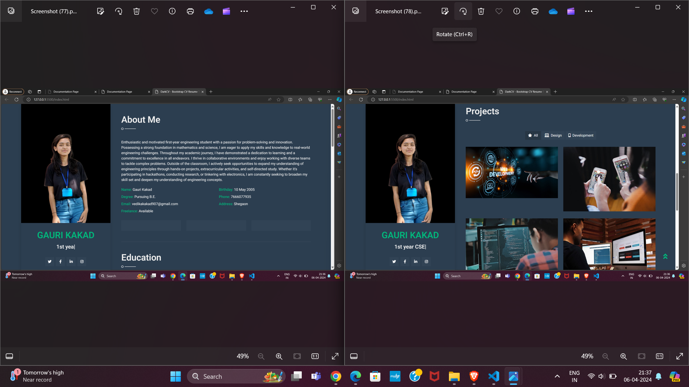

Welcome to the documentation for web development. In this guide, you will find comprehensive information about the various aspects of web development
What is Web Development?
Web development refers to the process of building and maintaining websites and web applications. It involves several disciplines, including web design, front-end development, back-end development, and web server configuration. Web developers use a combination of programming languages, frameworks, and tools to create functional and visually appealing websites.
This documentation serves as a guide for creating forms in web development.
Forms are essential elements of web applications that allow users to input data and interact with websites.
In this guide, you will learn how to create forms using HTML and enhance them with CSS and JavaScript.
HTML Form Structure
To create a basic form in HTML, you use the' form 'element along with various input elements such as text fields, email fields, text areas, and dropdown menus.
Creating a digital resume on a web page offers a unique opportunity to showcase your skills and experiences in an engaging and interactive format.
Creating buttons with different transitions.
In HTML, buttons can be created using the 'button' element. The 'button' element allows you to create clickable buttons that can trigger actions or perform functions when clicked.
Creating a world clock involves displaying the current time in various time zones across the globe.
By combining HTML, CSS, and JavaScript, you can create a world clock that displays the current time in different time zones. Customize the time zones and styling according to your preferences to create an interactive and informative world clock for your web page.
In this documentation, I will outline the process and rationale behind the creation of my engineering portfolio. This portfolio serves as a showcase of my skills, projects, and achievements as a first-year engineering student. 1. Portfolio Objectives: Define the purpose of the portfolio: To demonstrate proficiency in engineering concepts, showcase projects, and highlight skills. Identify the target audience: Potential employers, academic institutions, and peers in the engineering field. Outline specific goals: To showcase academic achievements, practical skills, and project experiences. 2. Portfolio Structure: Overview of sections: Introduction, Academic Background, Projects, Skills, Achievements, and Conclusion. Explanation of organization: Each section is designed to provide a comprehensive overview of my academic and practical experiences in engineering. 3. Academic Background: Summary of academic institution and program: Mention the university, major, and any relevant coursework. GPA and academic achievements: Highlight any academic honors, scholarships, or awards received. 4. Projects: Description of each project: Provide a brief overview of the project, including objectives, methodologies, and outcomes. Technical details: Include information about the tools, software, and techniques used in each project. Personal contributions: Outline your role in the project and the specific tasks you undertook. Results and outcomes: Discuss any challenges faced, lessons learned, and the impact of the project.
